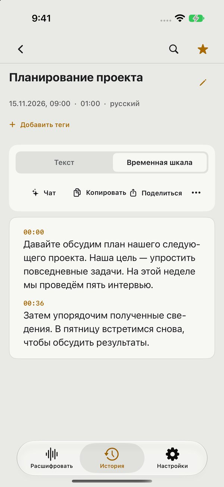
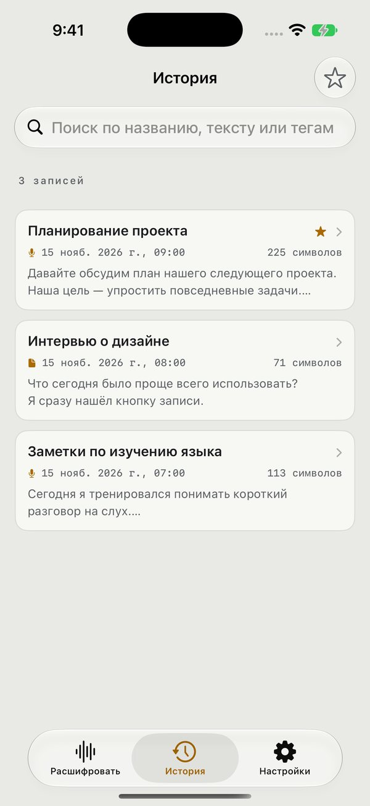
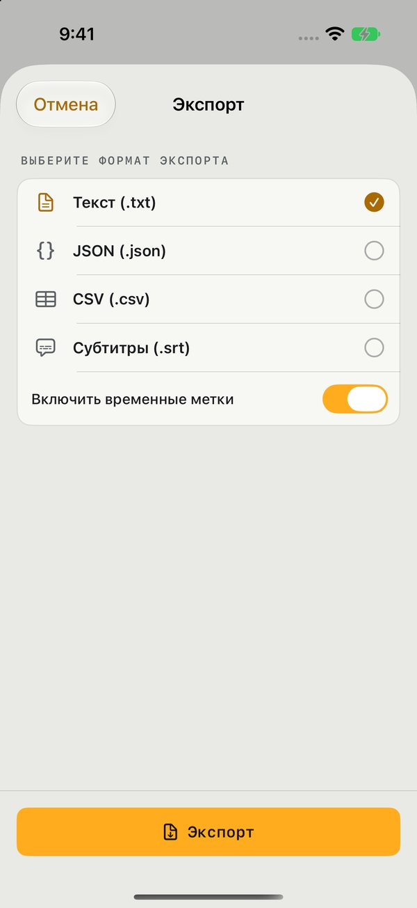

Ваш голос —теперь текст.
Запишите встречу, лекцию или интервью — или импортируйте аудио- или видеофайл — и получите расшифровку на iPhone или iPad.
Получайте текст в реальном времени во время записи на совместимых устройствах с iOS 26 или новее. Если включён Apple Intelligence, запросите ИИ-резюме в чате расшифровки.
- Все возможности бесплатно
- Без рекламы
- Без встроенных покупок
- Без аккаунта
- iPhone & iPad
Все возможности — бесплатно.
Платных тарифов нет. Всё, что перечислено на этой странице, — запись, импорт файлов, все модели Whisper, экспорт, история, теги, чат с Apple Intelligence и «Быстрые команды» — доступно бесплатно. Создавать аккаунт не нужно, и приложение не показывает рекламу.
- Без подписки и без разовых покупок
- Без встроенных покупок и заблокированных функций
- Без рекламы и без стороннего отслеживания
- Без регистрации и входа
- Приложение не ограничивает длительность записи и количество файлов — но свободное место, память и заряд аккумулятора устройства по-прежнему имеют значение
От записи к расшифровке
Запишите или импортируйте
Нажмите, чтобы начать запись с микрофона, или выберите аудио- или видеофайл в приложении «Файлы» или «Фото». Запись можно приостанавливать и продолжать.
Читайте, редактируйте и экспортируйте
Проверьте текст с метками времени, исправьте ошибки, а затем поделитесь им в формате TXT, CSV, JSON или субтитров SRT.
Что можно делать в приложении
Подробнее об основных разделах приложения.
Записывайте или используйте свои файлы
Начните запись одним нажатием или импортируйте готовый файл. Приложение конвертирует аудио и расшифровывает его на устройстве.
- Запись с микрофона с паузой и продолжением и переключение на внешний микрофон
- Статус записи на экране блокировки и в Dynamic Island через Live Activity (на поддерживаемых iPhone)
- Импорт аудио и видео (M4A, WAV, MP3, MP4, MOV и других) из приложения «Файлы»
- Выбор видео прямо из медиатеки приложения «Фото»
- Необязательный режим «Не выключать экран» для долгих записей
Whisper работает на вашем устройстве
Приложение использует открытые модели Whisper от OpenAI через whisper.cpp с ускорением на GPU Metal, где оно доступно. Выбирая другую модель, можно уравновесить скорость и точность.
- 10 моделей Whisper — от Tiny (около 15 MB) до Large v3 Turbo и Medium (до 1.5 GB)
- Автоопределение языка или выбор из 18 языков
- Необязательный перевод результата на английский
- Необязательная загрузка энкодера Core ML, которая может ускорить обработку на поддерживаемых устройствах
- В iOS 26 и новее также доступна альтернатива — встроенный механизм распознавания речи Apple

Таймлайн или режим чтения
Переключайтесь между чистым текстом и таймлайном с метками времени. Прослушивайте исходное аудио, чтобы проверить сказанное, и при необходимости исправляйте текст.
- Текстовый вид и таймлайн, метки времени по желанию
- Воспроизведение аудио с регулировкой скорости и позиции
- Редактирование расшифровки и её названия
- Копирование отдельного абзаца или всего текста
- Поиск по расшифровке

История с поиском
Каждая расшифровка сохраняется на вашем устройстве, чтобы вы могли вернуться к ней позже.
- Поиск по названию, тексту или тегу
- Избранное и сортировка
- Теги, которые можно добавлять, переименовывать, объединять и удалять для всех расшифровок
- Фильтрация истории по тегу

Текст, данные или субтитры
Поделитесь расшифровкой в формате, который подходит для следующего шага: заметки, таблица, сценарий или видеоредактор.
- TXT для заметок и документов
- CSV для таблиц
- JSON с сегментами для ваших собственных инструментов
- Субтитры SRT для монтажа видео
- Отправка исходной записи как аудиофайла
Задавайте вопросы о расшифровке iOS 26+
На устройствах с поддержкой Apple Intelligence можно общаться с расшифровкой — просить краткое изложение, ключевые решения или задачи — и создавать название. Чаты сохраняются для каждой расшифровки отдельно. Длинные расшифровки читаются по частям. Необязательный режим Private Cloud Compute (iOS 27 и новее) по умолчанию выключен.
«Быстрые команды» и Siri
Используйте быстрые команды приложения, чтобы начинать и останавливать запись, расшифровывать медиафайл, находить расшифровки, получать текст расшифровки, добавлять теги и избранное. Это удобно для автоматизаций. Некоторые действия требуют более новой версии iOS.
Все возможности — бесплатно
Полный список того, что приложение предлагает сейчас. Ничего из этого не требует покупки.
Запись
- Запись с микрофонаБЕСПЛАТНО
- Пауза и продолжение записиЗапись также учитывает прерывания, например входящие звонкиБЕСПЛАТНО
- Переключение микрофонаБЕСПЛАТНО
- Live Activity во время записиЭкран блокировки и Dynamic IslandБЕСПЛАТНО
- Импорт аудиофайловM4A, WAV, MP3 и другие распространённые форматыБЕСПЛАТНО
- Импорт видеофайловMP4, MOV и другие распространённые форматыБЕСПЛАТНО
- Импорт видео из приложения «Фото»БЕСПЛАТНО
- Расшифровка в реальном времениТекст появляется по мере речи · iOS 26+БЕСПЛАТНО
Распознавание речи
- Whisper на устройстве (whisper.cpp)БЕСПЛАТНО
- Все 10 моделей WhisperTiny, Base, Small, Medium, Large v3 Turbo и компактные вариантыБЕСПЛАТНО
- Встроенный механизм распознавания речи AppleiOS 26+, языки управляются iOSБЕСПЛАТНО
- Автоопределение или выбор из 18 языковБЕСПЛАТНО
- Перевод на английскийБЕСПЛАТНО
- Ускорение на GPU MetalЕсли устройство это поддерживаетБЕСПЛАТНО
- Энкодер Core ML (необязательная загрузка)БЕСПЛАТНО
Точность и производительность
- Пропуск тихих участковОпределение голосовой активности (VAD)БЕСПЛАТНО
- Очистка аудиоШумоподавление и нормализация громкостиБЕСПЛАТНО
- Подсказки словаряИмена и термины, которые модель должна учитыватьБЕСПЛАТНО
- Flash AttentionМожет снизить расход памяти и ускорить обработкуБЕСПЛАТНО
- Добавление меток времениБЕСПЛАТНО
Чтение и редактирование
- Текстовый вид и таймлайнБЕСПЛАТНО
- Воспроизведение аудио с регулировкой скоростиБЕСПЛАТНО
- Редактирование текста и названия расшифровкиБЕСПЛАТНО
- Копирование абзаца или всего текстаБЕСПЛАТНО
- Поиск по расшифровкеБЕСПЛАТНО
История и организация
- Сохранённая история расшифровокБЕСПЛАТНО
- Поиск по названию, тексту или тегуБЕСПЛАТНО
- Избранное и сортировкаБЕСПЛАТНО
- Теги: добавление, переименование, объединение, удалениеБЕСПЛАТНО
- Фильтрация по тегуБЕСПЛАТНО
Экспорт и отправка
- Текст (.txt)БЕСПЛАТНО
- CSV (.csv)БЕСПЛАТНО
- JSON (.json)БЕСПЛАТНО
- Субтитры (.srt)БЕСПЛАТНО
- Отправка исходного аудиоБЕСПЛАТНО
- Отправка текста через меню «Поделиться»БЕСПЛАТНО
Apple Intelligence
- Чат о расшифровкеiOS 26+ на поддерживаемых устройствахБЕСПЛАТНО
- Сохранённая история чатов для каждой расшифровкиБЕСПЛАТНО
- Создание названияБЕСПЛАТНО
- Режим Private Cloud ComputeНеобязательно · iOS 27+ · по умолчанию выключенБЕСПЛАТНО
Автоматизация и приложение
- Действия «Быстрых команд» и SiriБЕСПЛАТНО
- Интерфейс для iPhone и iPadБЕСПЛАТНО
- Светлое, тёмное или системное оформлениеБЕСПЛАТНО
- Интерфейс на 11 языкахБЕСПЛАТНО
- Управление моделями и хранилищемБЕСПЛАТНО
Функции с указанием версии iOS требуют этой версии или новее. Функции Apple Intelligence также зависят от поддержки устройства, региона и языковых настроек.
Аудио остаётся на вашем устройстве
Транскрибация Whisper выполняется локально. В приложении нет рекламы, аналитических SDK и стороннего отслеживания, и оно не отправляет ваше аудио или расшифровки разработчику.
Остаётся на устройстве
Записи, импортированные медиафайлы, расшифровки, теги, чаты и настройки хранятся в приложении на вашем устройстве. Их можно удалить в приложении в любое время.
Когда приложение подключается к сети
Чтобы загрузить файлы моделей Whisper, VAD и Core ML с Hugging Face; чтобы проверить в App Store наличие новой версии; а также когда iOS загружает модели речи для механизма Apple.
Ваш выбор
Private Cloud Compute для Apple Intelligence по умолчанию выключен. Если вы его включите, текст расшифровки и ваш вопрос обрабатываются в Private Cloud Compute от Apple. Если вы поделитесь экспортированным файлом, он отправится туда, куда вы укажете.
Перед началом работы
Устройство и система
iPhone или iPad с iOS / iPadOS 17.0 или новее. «Расшифровка в реальном времени», механизм распознавания речи Apple и Apple Intelligence на устройстве требуют iOS 26 или новее; Private Cloud Compute — iOS 27 или новее.
Хранилище и сеть
Для загрузки модели нужны подключение к интернету и свободное место (примерно от 15 MB до 1.5 GB в зависимости от модели). Для записи требуется разрешение на доступ к микрофону.
Частые вопросы
Приложение действительно бесплатное?
Да. Сейчас все функции доступны бесплатно. В приложении нет рекламы, встроенных покупок, подписок и регистрации аккаунта.
Приложение работает офлайн?
Транскрибация Whisper рассчитана на работу на вашем устройстве. Интернет нужен один раз — чтобы загрузить модель; после этого записывать и расшифровывать с этой моделью обычно можно без подключения. Загрузка других моделей, проверка обновлений и необязательный режим Private Cloud Compute требуют подключения.
Моё аудио отправляется на сервер?
Транскрибация Whisper выполняется локально, и приложение не отправляет аудио или расшифровки разработчику. Единственное исключение, которое зависит от вас, — необязательный режим Private Cloud Compute для чата с Apple Intelligence: он отправляет текст расшифровки и ваш вопрос в Private Cloud Compute от Apple. По умолчанию он выключен.
Какие файлы можно импортировать и экспортировать?
Можно импортировать распространённые аудио- и видеоформаты, например M4A, WAV, MP3, MP4 и MOV, из приложения «Файлы», а также видео из «Фото». Расшифровки можно экспортировать в TXT, CSV, JSON или SRT, а записи — отправлять как аудиофайлы.
Какие языки поддерживаются?
Для транскрибации можно использовать автоопределение или выбрать английский, японский, китайский, корейский, испанский, французский, немецкий, итальянский, португальский, русский, арабский, хинди, нидерландский, польский, турецкий, вьетнамский, тайский или индонезийский. Результаты могут различаться в зависимости от языка. Интерфейс приложения доступен на 11 языках.
Можно ли сделать субтитры для видео?
Да. Импортируйте видео, расшифруйте его, а затем экспортируйте в SRT. Большинство видеоредакторов поддерживают импорт файлов SRT. Тайминг субтитров соответствует распознанным сегментам, поэтому его, возможно, стоит подкорректировать в редакторе.
Какой длины может быть запись?
Приложение не устанавливает фиксированного ограничения. На практике длительность очень длинной записи ограничена свободным местом, памятью и зарядом вашего устройства, а большие модели работают дольше. Если длинный файл не обрабатывается, может помочь модель поменьше или Flash Attention.
Это официальное приложение OpenAI?
Нет. Это независимое приложение, которое запускает открыто опубликованные модели Whisper от OpenAI через проект whisper.cpp с открытым исходным кодом. Оно не связано с OpenAI и не одобрено ею.